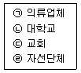
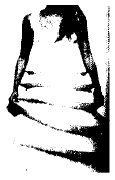
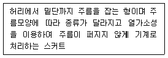
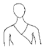
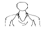
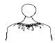
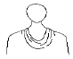
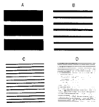
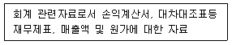

패션머천다이징산업기사 (2003-03-16 기출문제)
1과목: 패션마케팅
1. 다음 보기 중 마케팅을 수행하는 기관을 모두 고르시오.

- ㉠
- ㉠, ㉡
- ㉠, ㉡, ㉢
- ㉠, ㉡, ㉢, ㉣
(정답률: 알수없음)

2. 다음 상품기획 중 디자인 개발 과정에 속하는 것은?
- 소재의 내역
- 가격 책정
- 판매원 관리
- 유통망 결정
(정답률: 알수없음)
3. 소매업의 상품기획 중 예산기획은 다음 중 어느 것으로 시작하는가?
- 재고기획(planned stocks)
- 마크다운기획(planned reductions)
- 매출기획(planned sales)
- 오픈투바이(open-to-buy)
(정답률: 알수없음)
4. 최근에는 제품을 사입할 수 있는 사입원인 ( )이 다양화되어 리테일 머천다이저가 이에 대한 정보를 갖는 것이 중요한 일이다. ( )에 알맞는 말은?
- 쿼타(quota)
- 소싱(sourcing)
- 컨버터(converter)
- 라이센싱(licensing)
(정답률: 알수없음)
5. 다음은 패션마케팅 관리 철학 중 판매개념과 마케팅개념에 대한 설명이다. 틀린 것은?
- 판매개념은 기업이 생산한 기존제품을 판매원과 판매촉진 등의 적극적인 판매수단을 통하여 단기적 매출을 늘림으로써 이윤을 추구하는 것이다.
- 판매개념은 고객의 욕구를 기업의 관점보다는 고객의 관점에서 이해하려는 것이다.
- 마케팅개념은 고객 욕구의 충족을 마케팅 노력의 최우선으로 두고 모든 마케팅활동을 표적시장 고객들에게 초점을 맞추어 통합적으로 관리조정하는 것이다.
- 마케팅 개념은 고객 만족을 통해 장기적 이윤을 창출하는 것을 목표로 한다.
(정답률: 알수없음)
6. 리테일 머천다이저에 대한 설명이 바른 것은?
- 미가공 직물을 구매하여 완성품으로 만들어 판매하는직물가공 판매업자
- 소비자가 선호할 패션제품을 의류제조업체나 도매상 등으로부터 구매하여 다시 판매하는 사람
- 표적 고객의 욕구를 고려한 계절별 패션제품의 디자인을 개발하여 상품화하는 사람
- 디자이너의 독창적인 디자인이나 외국 등의 제휴기업으로부터 제공된 디자인을 응용하여 디자인을 전개하는 사람
(정답률: 알수없음)
7. 패션머천다이징의 개념 중 5R에 속하지 않는 것은?
- 적절한 상품(right product)
- 적절한 장소(right place)
- 적절한 가격(right price)
- 적절한 판매(right sales)
(정답률: 알수없음)
8. 바람직한 패션머천다이징을 위해 행해지는 패션머천다이징 시스템 중 상품구성에 속하지 않는 것은?
- 물량 계획
- 판매 기획
- 예산 계획
- 타임스케줄 작성
(정답률: 알수없음)
9. 시미주시게루(Shimizu Shigeru)의 상품 구성계획에서 일반적으로 고려하는 상품군에 포함되지 않는 것은?
- 중점상품
- 전략상품
- 재고상품
- 보완상품
(정답률: 알수없음)
10. 경로에 따른 유통전략을 실행하는데 있어 되도록 많은 소매상들이 자사제품을 취급함으로써 시장범위를 최대화 하려는 경로전략은?
- 집약적 유통
- 전속적 유통
- 선택적 유통
- 수평적 유통
(정답률: 알수없음)
11. 마케팅 믹스(marketing mix/4P's mix)에 대한 설명으로 틀린 것은?
- 제품계획: 판매할 상품에 관한 계획을 수립하는 것인데, 상품에 대한 서비스 계획이나 개발은 포함되지 않는다.
- 가격구조: 직접원가, 출고가격, 판매가격의 결정 및 정상판매를 비롯하여 할인 판매가격의 결정 등이 포함된다.
- 판매촉진활동 : 판매를 증대시키기 위한 기능이나 활동을 의미하며, 광고, 디스플레이, 스페셜 이벤트, 판매원에 의한 판매 등이 포함된다.
- 유통구조 : 상품이 시장에 공급될 수 있도록 유통경로를 선정하고, 유통구조를 계획하고 개발하는 일이 포함된다.
(정답률: 알수없음)
12. 적절한 패션상품과 서비스를 소비자가 원하는 시간과 장소에 적정한 가격으로 공급하기 위해 패션제품이 소비자에게 이르기 까지의 과정을 단축시키는 효율적인 물류정보시스템은?
- CAM
- POP
- QRS
- EDI
(정답률: 알수없음)
13. 다음 중 패션머천다이저의 책임과 가장 거리가 먼 것은?
- 계획목표설정
- 시장변동
- 인재개발
- 예산컨트롤
(정답률: 알수없음)
14. 패션제품의 가격을 결정하기 위해, 먼저 표적소비자들이 그 회사의 제품에 부여하는 가치의 정도를 조사하여 이에 상응한 제품가격을 목표가격으로 설정하고 제품을 기획하는 가격 결정방법은?
- 원가중심 가격결정
- 소비자중심 가격결정
- 경쟁제품중심 가격결정
- 소매가중심 가격결정
(정답률: 알수없음)
15. 패션소비자의 활동, 관심, 의견과 관련된 내용으로 시장을 세분화 한다면 다음 중 그 기준이 되는 것은?
- 개성
- 라이프스타일
- 사회계층
- 직업
(정답률: 알수없음)
16. 중고의류에 대한 보상판매는 다음 중 어느 것의 일환으로 볼 수 있는가?
- 보상 마케팅
- 환경 마케팅
- 온라인 마케팅
- 감성 마케팅
(정답률: 알수없음)
17. 상품 기획 부분의 스페셜리스트가 아닌 것은?
- 패션머천다이저(Fashion merchandiser)
- 패션브랜드매니저(Fashion brand manager)
- 패션디자이너(Fashion designer)
- 패션일러스트레이터(Fashion illustrator)
(정답률: 알수없음)
18. 다음중에서 리테일 머천다이저의 사입 활동으로 알맞는 것은?
- 점포의 고객으로 규정한 목표 집단에 대해 표적시장 기획을 한다.
- 제조회사의 수주회의나 트레이드 쇼에 참석하여 적절한 상품을 적절한 수량만큼 발주한다.
- 상품을 효율적으로 판매하는데 필요한 가격정책, 판매촉진활동, 서비스 제공 등의 의사결정을 한다.
- 패션정보와 소비자 정보를 활용하여 표적시장과 정보 내용에 맞도록 머천다이징 컨셉 기획을 한다.
(정답률: 알수없음)
19. 다음 중 기획 머천다이저의 업무는?
- 신제품 개발
- 상품 사입
- 영업 전략
- 점포 전략
(정답률: 알수없음)
20. 가격전략 중 초기고가전략(market-skimming pricing)을 수행하기에 적절한 상황이 아닌 것은?
- 상당수 소비자의 구매욕구가 기대될 때
- 가격이 높으면 품질이 높다고 기대될 때
- 경쟁사의 시장진입이 어려울 때
- 소비자의 가격민감도가 높을 때
(정답률: 알수없음)
2과목: 패션소재기획
21. 패션 상품기획에서 패션 상품의 여러 구성 요소 중 최근 상품의 차별화 수단으로 가장 중요한 역할을 하는 것은?
- 스타일의 변화
- 소재의 변화
- 소비자 심리 변화
- 디스플레이의 변화
(정답률: 알수없음)
22. 목재 펄프나 면린터 등, 셀룰로스를 원료로 사용하여 얻어진 섬유로서 셀룰로스가 주성분인 섬유는?
- 세리신
- 레이온
- 나이론
- 면
(정답률: 알수없음)
23. 의류제품의 품질표시 원칙에서 잘못된 것은?
- 제조업체의 이름을 쓴다.
- 섬유조성 비율을 표시한다.
- 조성 섬유명은 업체 고유문자로 쓴다.
- 조성 표시는 잘 보이는 곳에 보기 쉽게 쓴다.
(정답률: 알수없음)
24. 소재업체와 의류업체의 소재기획 과정에서 모두 중요하게 고려하여야 할 요소가 아닌 것은?
- 패션 경향(fashion trend)
- 목표 시장의 특성
- 기존의 판매 실적
- 소재샘플(swatch) 제작
(정답률: 알수없음)
25. 의류제품의 품질 레이블(label)에 표시하는 내용으로 맞지 않는 것은?
- 세탁방법
- 섬유의 조성
- 제품 치수
- 수입자의 주소
(정답률: 알수없음)
26. 아마(linen)의 생산과정의 순서가 바르게 나열된 것은?
- 침지 - 건조 - 쇄경 - 제선 - 즐소(빗질)
- 침지 - 쇄경 - 제선 - 즐소(빗질) - 건조
- 건조 - 침지 - 쇄경 - 제선 - 즐소(빗질)
- 건조 - 쇄경 - 제선 - 즐소(빗질) - 건조
(정답률: 알수없음)
27. 소재업체에서 소재기획을 위하여 유행색상과 유행소재 정보를 수집하여 구상하는 시기는?
- 본 시즌의 18 - 24개월전
- 본 시즌의 12 - 18개월전
- 본 시즌의 5 - 9개월전
- 본 시즌의 2 - 3개월전
(정답률: 알수없음)
28. 편성물을 직물과 비교했을 때 특징이 아닌 것은?
- 편성물이 직물보다 신축성이 크다.
- 편성물이 직물에 비해 구김이 생기지 않는다.
- 편성물이 직물보다 공기 함기율이 적다.
- 편성물은 마찰에 대해 매우 약해 내구성이 직물보다 못하다.
(정답률: 알수없음)
29. 다음 무늬 소재 중 가문이나 집안을 표시하는 문양으로 패션소재 디자인에 광범위하게 사용되는 문양은?
- 타탄(Tartan) 소재
- 스트라이프(Stripe) 소재
- 허니-콤(Honey-Comb) 소재
- 헤링본(Herring-Bone) 소재
(정답률: 알수없음)
30. 합연의 정도에 따른 실의 종류 중 패션의류용도로 많이 사용되는 실끼리 묶은 것은?
- 단사 - 합연사 - 코드사
- 단사 - 합연사 - 코드사 - 케이블
- 단사 - 합연사 - 코드사 - 케이블 - 로프
- 단사 - 합연사 - 코드사 - 케이블 - 로프 - 호저
(정답률: 알수없음)
31. 다음 중 면섬유로 제직한 직물 중 여름용 소재로 적합하지 아니한 것은?
- 리플 소재(ripple)
- 시어서커 소재(sear-sucker)
- 의마 소재(linen-like)
- 플란넬 소재(flannel)
(정답률: 알수없음)
32. 펠트(felt)의 제조원리와 관계가 있는 것은?
- 면의 내알칼리성
- 양모의 축융성
- 견의 드레이프성
- 나일론의 열가소성
(정답률: 알수없음)
33. 다음 소모 소재 중 여름용으로 쿨(Cool)한 이미지를 주는 소재는?
- 밀링(Milling) 소재
- 기모(Raising) 소재
- 강연(High-Twist) 소재
- 펠팅(Felting) 소재
(정답률: 알수없음)
34. 다음 중 친환경적인 가공 소재는?
- 친즈(chintz) 가공 소재
- 코팅(coating) 가공 소재
- 효소(enzyme) 가공 소재
- 시레(cire) 가공 소재
(정답률: 알수없음)
35. Wool/others 혼방섬유에서 표현할 수 없는 색상은?
- 다크 - 옐로우(dark-yellow)
- 다크 - 브라운(dark-brown)
- 블랙(black)
- 다크 - 네이비(dark-navy)
(정답률: 알수없음)
36. 다음 중에서 소재기획의 특성으로 옳지 못한 것은?
- 소재 기획 단계에서 최종 제품의 사용 용도는 기본적인 기획의 방향을 제한하거나 제시한다.
- 소재는 제품을 만들기 위한 중간재이므로, 소재기획 단계에서 최종 제품의 특성을 고려하지 않아도 된다.
- 대량생산 제품은 소재기획 시기와 최종 제품의 판매시기의 차이가 크다고 볼 수 있다.
- 성공적인 소재 기획을 위해서는 디자인, 기술, 마케팅 등의 부분들이 서로 통합적으로 작용하여야 한다.
(정답률: 알수없음)
37. 소재의 감성별 특징이 틀린 것은?
- 클린(Clean) - 매끈매끈한, 평평한
- 드라이(Dry) - 단단한, 뻣뻣한, 딱딱한
- 러프(Rough) - 거친, 까슬까슬한, 울퉁불퉁한
- 소프트(Soft) - 부드러운, 드레이프성이 있는
(정답률: 알수없음)
38. 패션 경향(fashion trend) 중에서 엑조틱(exotic)한 이미지를 표현하는데 적합하지 못한 감성 용어는?
- 역사적인
- 전통적인
- 여성적인
- 민속풍의
(정답률: 알수없음)
39. 인조섬유의 제조과정에서 옷의 함기량을 많게 하여 따뜻하고 촉감도 좋은 섬유를 얻기 위해 필라멘트 섬유를 절단하여 얻은 섬유는?
- 데니어(denier)
- 스테이블 파이버(staple fiber)
- 토(tow)
- 멀티 필라멘트(multi filament)
(정답률: 알수없음)
40. 다음 그림과 같이 섬유의 열가소성의 원리를 이용한 주름 소재로 패션성을 나타낸 대표적인 디자이너는?

- 입생 로랑(Yves saint laurent)
- 피에르 발맹(Pierre Balmain)
- 이세이 미야케(Issey Miyake)
- 파코 라반(Paco Rabanne)
(정답률: 알수없음)
3과목: 유통관리 및 광고
41. 유능한 판매원의 역할이 아닌 것은?
- 사입 기술
- 판매 기술
- 접객 기술
- 고객 관리
(정답률: 알수없음)
42. 다음 중 패션회사나 소매점이 홍보를 위해 실시하는 구체적인 방법으로 적합하지 않은 것은?
- 신문사 또는 잡지사에 정보를 준다.
- 패션쇼에 기자를 초대한다.
- 각종 매체에 패션관련 지식을 제공한다.
- 직접 광고물을 제작하여 발송한다.
(정답률: 알수없음)
43. 소매상의 가격결정 시 고려해야할 요인 중 외부요인에 해당되는 것은?
- 점포 규모
- 매출액
- 고객 특성
- 상품 회전율
(정답률: 알수없음)
44. 상품계획의 목적이 아닌 것은？
- 적정상품을 확보하기 위하여
- 적정수량을 확보하기 위하여
- 적정시기를 맞추기 위하여
- 적정고객을 확보하기 위하여
(정답률: 알수없음)
45. 매장구성의 주류를 이루면서 높은 매출과 이익을 창출하는 상품군은?
- 보완제품
- 전략제품
- 중점제품
- 촉진제품
(정답률: 알수없음)
46. 상품 구매업무를 수행할 때 가장 적절한 지침은?
- 가격이 비싼 사입처를 가장 먼저 방문하게 되면 정확한 판단을 할 수 없게 되므로 피해야 한다.
- 바이어가 사입처를 처음 방문했을 때 즉석에서 발주를 내지 않아야 한다.
- 구매처 기록부를 기초자료로 거래처 선정을 하는 것은 서류에 의존하는 비효율적인 업무형태이다.
- 현재 거래 중의 사입처에 대한 능력과 공정성을 비교 분석하는 것과 새로운 상품 사입처를 개척하는 것은 별개의 일이므로 다른 사람과 업무를 각자 분담하도록 한다.
(정답률: 알수없음)
47. 윈도우 디스플레이에 대한 설명이 잘못된 것은?
- 윈도우 디스플레이란 점포안의 상품들을 가장 흥미로운 조합으로 통행인에게 보여주는 것이다.
- 윈도우 디스플레이는 상품특성, 사용상황, 점포 이미지등을 전달하는 수단이다.
- 윈도우 진열은 매출증대와 관련없이 이미지 전달이 그 목적이다.
- 윈도우 디스플레이는 점포 내부와 외부를 연결하는 중요한 커뮤니케이션 공간이다.
(정답률: 알수없음)
48. 상품구성의 폭과 깊이에 대한 설명 중 틀린 것은?
- 상품구성의 폭은 소비자에게 제공하는 품목수를 의미하고, 깊이는 품목의 양을 의미한다.
- 소품종 다량구성은 폭이 좁고 깊은 구성이다.
- 소매점의 경우 상품구성의 폭은 구색을 갖추는 상품의 종류를 의미한다.
- 중류층을 대상으로 하는 점포는 시즌초에는 좁고 깊은 상품구성이 바람직하다.
(정답률: 알수없음)
49. 다음 중 광고매체별 특성이 바르게 연결되어 있는 것은?
- 옥외광고 - 반복 노출도가 낮다.
- 우편광고 - 청중을 선별할 수 없다.
- 브로셔 - 기업의 완전 통제가 가능하며 기업홍보용으로 사용되기도 한다.
- 전화번호부-광고 구매대기 시간이 짧고 창의성이 충분히 발휘될 수 있다.
(정답률: 알수없음)
50. 1990년대 후반 동대문 상권의 소규모 의류 소매점들이 밀레오레, 두산타워와 같은 거대한 유통구조로 수평적 계열화를 이루었다. 이를 통해 창출되었던 시너지 효과로 간주될 수 없는 것은?
- 수평적 네트워크를 형성함으로써 기업간 차별화를 이룰 수 없었다.
- 마케팅 활동에 필요한 자본의 부족을 상호보완할 수 있었다.
- 다양한 마케팅 전략을 효과적으로 공유할 수 있었다.
- 소규모 중소기업들이 새로운 시장기회를 탐색할 수 있었다.
(정답률: 알수없음)
51. 다음 중 상품구성 기획에 대한 설명으로 틀린 것은?
- 상품선정은 가격, 상품구성의 폭과 깊이, 상품 특성, 판매시기, 독점성, 서비스등을 고려하여 이루어진다.
- 기본 재고기획은 지속적인 수요가 있는 기본 상품에 대한 기획이다.
- 상품구성의 폭은 소비자에게 제공하는 품목수로 구색을 갖추는 상품의 종류를 말한다.
- 다품종 소량구성이란 상품의 좁고 깊은 구성으로 대량상품을 취급하는 점포에 적당하다.
(정답률: 알수없음)
52. 신문광고의 특성에 대해 올바르게 설명한 것은?
- 광고의 재현능력이 높다.
- 지속적 독자수가 많다.
- 매체에 대한 신뢰성이 낮다.
- 광범위한 지역에 대한 수용성이 높다.
(정답률: 알수없음)
53. 전통적인 유통경로의 비효율성을 제거하고, 한계점을 극복하기 위해 유통경로 시스템을 수직적 혹은 수평적으로 결합하는 것을 무엇이라고 하는가?
- 유통경로의 계열화
- 유통정보의 통합화
- 유통구조의 단순화
- 유통경로의 혼합화
(정답률: 알수없음)
54. 광고매체 중 TV의 특징이 아닌 것은?
- 시청각 매체로 설득력이 강하다.
- 실물의 실연제시 기능이 있다.
- 광고가격이 비싸다.
- 소구범위가 한정되어 있다.
(정답률: 알수없음)
55. 다음 중 대리점에 대한 설명이 아닌 것은?
- 보통 한 업체와 전속거래를 맺는다.
- 프랜차이즈 시스템이 가장 일반적인 유통경로이다.
- 대리점은 상표이미지를 일관되게 유지하기 위해 본부의 관리를 받는다.
- 특정소비자 집단을 대상으로 한정된 제품계열만 판매한다.
(정답률: 알수없음)
56. 소매업 머천다이징의 판매활동에 포함되지 않는 것은?
- 가격정책
- 재고관리
- 생산관리
- 촉진활동
(정답률: 알수없음)
57. VMD 전개의 기본요소의 설명이 잘못된 것은?
- IP와 PP는 보여주는 역할을 하고, VP는 판매하는 역할을 한다.
- VP는 고객의 시점과 다소 멀다.
- PP는 분류된 상품의 판매 포인트를 보여준다.
- IP는 Item Presentation으로 상품의 사이즈별, 스타일별, 컬러별, 소재별 분류를 말한다.
(정답률: 알수없음)
58. 제품이 판매업자에게서 소매상까지 도착하는 운송조건에 대한 설명 중 틀린 것은?
- 바이어는 적합한 운송방법을 고려하여 주문사양서에 명시하여야 한다.
- FOB(Free On Board) 포인트는 상품이 바이어에게 전해지기로 정해진 장소의 원지점을 나타낸다.
- FOB(Free On Board) 팩토리는 소매상이 모든 운송비와 보험비용을 지불하고 제품을 인도하는 것을 말한다.
- FOB(Free On Board) 스토어는 운송비용면에서 판매업자에게 가장 유리한 조건이다.
(정답률: 알수없음)
59. VMD의 목적이 아닌 것은?
- 라이프스타일 분석
- 점포의 이미지 향상
- 상품과 브랜드 이미지 향상
- 차별화 실현
(정답률: 알수없음)
60. 매장관리에서 다루어지지 않는 활동은?
- 환경관리
- 영업관리
- 매장구성
- 시스템관리
(정답률: 알수없음)
4과목: 패션디자인론 및 의복구성학
61. 요크 스커트의 경우 다트 처리는 어떻게 하는가?
- 요크스커트의 경우 다트 선이 있어야 좋다.
- 제도시 다트를 넣고 재단시에 다트를 접어서 없애준다.
- 요크스커트 제도 시에는 다트량을 계산하지 않는다.
- 요크스커트 제도시 다트량은 계산하되, 다트는 넣지 않는다.
(정답률: 알수없음)
62. 다음 설명에 해당되는 스커트의 명칭은?

- 플리츠스커트
- 플레어스커트
- 스트레이트 스커트
- 고어드 스커트
(정답률: 알수없음)
63. X 자형 실루엣이 아닌 것은?
- 프린세스(Princess) 실루엣
- 아워글라스(hourglass) 실루엣
- 시프트(Shift) 실루엣
- 크리놀린(Crinoline) 실루엣
(정답률: 알수없음)
64. 다음 중 대비조화 중 지나치게 강렬한 느낌을 주고 두 색의 관계가 뚜렷하게 나타나기 때문에, 이보다 약간 덜 눈에 띄는 미묘한 대비조화를 이루는 것을 무엇이라 하는가?
- 보색조화
- 분보색조화
- 중보색조화
- 삼각조화
(정답률: 알수없음)
65. 옷감의 표면에 변화를 주는 방법으로 1cm 간격의 점을 떠서 홈질하여 잡아 당겨 주름에 의한 무늬로 표면을 장식하여 의복의 요크에 주로 이용되는 것은?
- 턱(tuck)
- 스모킹(smocking)
- 퀼팅(quilting)
- 프린징(fringing)
(정답률: 알수없음)
66. 봉제 시 재봉 바늘의 열 발생과 가장 관련이 없는 것은?
- 재봉기의 회전속도
- 소재의 두께
- 소재의 염색성
- 소재의 밀도
(정답률: 알수없음)
67. 심지에 대한 설명으로 맞지 않는 것은?
- 원단의 촉감, 기능성을 약화시키지 않아야 한다.
- 품질이 균일하고 겉감조직을 안정되게 하며 봉제가 용이한 것이어야 한다.
- 모심지는 신축성, 탄력성, 방추성이 우수하고 드레이프성이 좋다.
- 여성복 재킷에는 부드러운 헤어클로스(경사:양모사, 위사:헤어섬유)를 주로 사용한다.
(정답률: 알수없음)
68. 안감의 봉제시 퍼커링을 방지하기 위해 고려하여야 할 사항이 아닌 것은?
- 노루발의 압력
- 바늘의 굵기
- 바늘판의 높낮이
- 프레스의 온도
(정답률: 알수없음)
69. 상의 디테일 가운데 홀터(halter)를 표현한 것은?




(정답률: 알수없음)
70. 패션의 하향 전파 현상의 조건을 설명한 것이다. 맞지 않는 것은?
- 사회적으로 계급이 존재하고 사회 이동이 가능하여야 한다.
- 상류 계층이 새로운 스타일 채택의 선도적 역할을해야 한다.
- 1904년에 심멜에 의해서 발표되었다.
- 혁신적 스타일이 사회전반에 확산되려면 계층간의 연결자가 존재해야 한다.
(정답률: 알수없음)
71. 다트 양을 디자인 상 다른 형태로 바꿀 수 있다. 적합하지 않은 것은?
- 개더 (gather)
- 플리츠 (pleats)
- 프린세스 라인 (princess line)
- 카울 (cowl)
(정답률: 알수없음)
72. 의복 패턴에 대한 설명 중 옳지 않은 것은?
- 길원형 제도시 뒤 어깨 다아트는 견갑골의 튀어나온 곳을 향한다.
- 소매 제도시 소매산이 높을수록 소매폭은 좁아지고 밑소매 길이가 짧아져 형태는 예쁘나 팔을 올리는데 다소 불편한 소매가 된다.
- 다아트의 위치를 다른 곳으로 이동시키는 것을 다트머니퓨레이션(dart manipulation)이라고 한다.
- 스커트 다아트의 경우 인체 형태에 따라 앞 다아트가 뒤보다 길게 형성된다.
(정답률: 알수없음)
73. 매스패션(mass fashion)의 확립기는?
- 1921 - 1944년
- 1945 - 1957년
- 1958 - 1964년
- 1965 - 1969년
(정답률: 알수없음)
74. 하위 문화집단이 유행을 창조한 모델과 관련이 가장 먼 것은?
- 히피
- 에꼴로지
- 펑크
- 힙합
(정답률: 알수없음)
75. 다음 그림은 선의 굵기, 조밀성의 착시이다. 선의 직각방향에 대한 신장도의 순은?

- A - B - C - D
- A - C - B - D
- D - C - B - A
- C - B - A - D
(정답률: 알수없음)
76. 다음 공정 기호 중 수량검사를 나타내는 기호는?
- □
- ◇
- ○
- ▽
(정답률: 알수없음)
77. 1960년대와 1970년대의 패션 전파현상의 설명에 적합한 이론은?
- 상향전파이론
- 혼합이론
- 하향전파이론
- 수평전파이론
(정답률: 알수없음)
78. 다음 복식의 유형 중 연결이 잘못된 것은?
- 드레이퍼리형 - 토가, 히메이션
- 관두형 - 캔디스, 사리
- 카프탄형 - 두루마기, 코트
- 체형형 - 원피스, 재킷, 바지 저고리
(정답률: 알수없음)
79. 의복의 외곽선이 상부와 하부는 풍성하고, 허리 부분은 몸에 꼭 끼는 형태는 무엇인가?
- 아워글라스 실루엣(hourglass silhouette)
- 배럴 실루엣(barrel silhouette)
- 쉬프트 실루엣(shift silhouette)
- 튜불러 실루엣(tubular silhouette)
(정답률: 알수없음)
80. 인간과 제품과의 조화로운 관계를 고려한 복식 디자인 과정이 맞게 연결된 것은?
- 목표의 설정 - 착용자 및 상황요인판단 - 제품특성 설정 - 구성요소의 설계
- 목표의 설정 - 착용자 및 상황요인판단 - 구성요소의 설계 - 제품특성 설정
- 착용자 및 상황요인판단 - 목표의 설정 - 제품특성 설정 - 구성요소의 설계
- 제품특성 설정 - 목표의 설정 - 구성요소의 설계 - 착용자 및 상황요인판단
(정답률: 알수없음)
5과목: 패션정보분석
81. 다음 중 소재 정보분석을 위한 트랜드 요인이 아닌 것은?
- 원사 및 패브릭 경향
- 염색과 가공 경향
- 소재 메이커의 상표 인지도
- 실루엣과 디테일 경향
(정답률: 알수없음)
82. 다음의 자료는 무엇에 속하는가?

- 기업의 외부자료
- 소비자의 내부자료
- 기업의 내부자료
- 소비자의 외부자료
(정답률: 알수없음)
83. 국내섬유제품을 해외 유명 브랜드를 능가하는 수준으로 향상시키고 세계일류 상품으로 경쟁력을 제고하기 위한 품질 보증제도는?
- 명품 마크
- 중소기업 우수제품 마크
- 기능 마크
- 품질보증 마크
(정답률: 알수없음)
84. 패션마케팅 자료의 유형 중 1차 자료인 것은?
- 패션 전문지 자료
- 대중적 패션잡지 자료
- 스트리트 패션 조사 자료
- 기업 내부의 회계, 생산관련 자료
(정답률: 알수없음)
85. POS(Point-of Sales System)에 대한 설명으로 옳지 않은 것은?
- 바코드를 통해 인식된다.
- 제조시점 정보관리 시스템을 말한다.
- 점포의 상품정보, 매출, 반품, 재고 등의 즉각적인 파악이 가능하다.
- 상품의 가격, 스타일, 사이즈, 색상 등의 정보가 중앙 컴퓨터에 연결되어 있다.
(정답률: 알수없음)
86. 한 개인이 살아가는 방식으로 보통 개인의 활동 (Activity), 관심(Interest), 의견(Opinion)을 의미하는 AIO를 지칭하는 것은?
- 패션 구매 패턴
- 소비자의 자아개념
- 라이프 스타일
- 소비자 행동
(정답률: 알수없음)
87. 메트릭스(metrics)도법에 대한 설명으로 바른 것은?
- 의복과 소재와의 관계를 수량적으로 파악하여 시즌에 따라 어떻게 변화하는가를 관찰함으로써 시계열적인 변화를 파악할 수 있다.
- 조직이나 실을 구별하기 위해서가 아니라 느낌(질감,촉감, 외관)에 의해서 나누는 것을 말한다.
- 직물의 색상을 조사하기 위한 방법이다.
- 아이템 분류방법으로 수량을 체크하여 분석하기 위한 방법이다.
(정답률: 알수없음)
88. 경쟁브랜드에 관한 정보를 분석하는 목적은 무엇인가?
- 경쟁브랜드의 상품을 복제하여 그 제품의 장점을 도입, 응용하기 위해서이다.
- 자사 브랜드 이미지 향상을 비롯하여 상품기획, 판매촉진을 위해 정확한 분석을 하기 위함이다.
- 경쟁사 제품 판매를 막기 위함이다.
- 경쟁사 브랜드 이미지 향상을 위한 것으로 정확한 분석을 하기 위함이다.
(정답률: 알수없음)
89. 과거와 달리 오늘날 소비자가 새 옷을 구입하게 하는 주요 욕구와 가장 상관이 먼 것은?
- 다른 사람에게 좋은 인상을 주려는 욕구
- 매력적이고 싶은 욕구
- 감정적 욕구를 채우려는 욕구
- 낡은 옷을 바꾸고 싶은 욕구
(정답률: 알수없음)
90. 다음의 패션 정보 중 디테일 정보로 틀린 것은?
- 스커트의 헴라인
- 드레스의 프린세스라인
- 블라우스의 네크라인
- 트렌치 코트의 슬리브
(정답률: 알수없음)
91. 시장조사의 내용에 포함되지 않는 것은?
- 시장세분화
- 표적시장의 설정
- 표적시장의 포지셔닝
- 기업내부 정보
(정답률: 알수없음)
92. 브랜드에 대해 얼마나 알고 있느냐에 관한 조사를 무엇이 라 하는가?
- 의식 조사
- 선호도 조사
- 착용경향 조사
- 인지도 조사
(정답률: 알수없음)
93. 정보원의 종류 구분이 올바르지 않은 것은?
- 활자미디어 정보원 - 신문, 잡지 등
- 인적 정보원 - 전화, 팩스 등
- 컴퓨터 통신 정보원 - 인터넷, 데이터 베이스 등
- 전파 미디어 정보원 - TV, 라디오 등
(정답률: 알수없음)
94. 패션 정보를 1차와 2차로 구분할 때, 이에 대한 설명이 옳은 것은?
- 1차 정보는 신속도가 낮다.
- 2차 정보는 생정보라 한다.
- 1차 정보는 정확도가 낮다.
- 가공정보는 신속도가 높다.
(정답률: 알수없음)
95. 소비자 선호 분석으로 바르지 못한 것은?
- 젊은이들은 새로운 패션을 가장 일찍 받아들이는 경향이 있다.
- 소득 수준이 낮은 층의 사람들은 항상 값싼 의복을 구매하려 한다.
- 일부 고연령층은 패션 감각이 느리며 새로움보다 가격과 서비스에 관심이 많다.
- 고객들은 상점이나 생산자가 기간을 조정하지 않는 한 상품이 필요한 시기에 인접해서 상품을 구매하려 한다.
(정답률: 알수없음)
96. 정보의 분석이란?
- 수집 분류된 정보를 그 요소나 성질에 따라서 구분하는 작업
- 수집 분류된 정보를 날짜별로 성분을 구분하는 작업
- 수집 분류된 정보를 수집된 경로별에 따라서 상품 기획에 응용하는 작업
- 수집 분류된 정보를 이용자에 따라 구분하는 작업
(정답률: 알수없음)
97. 시장 조사에 대한 설명이 옳지 않은 것은?
- 신상품을 조사한다.
- 시장 입지조건을 조사한다.
- 추측조사를 원칙으로 한다.
- 시장 규모와 시장 구조를 조사한다.
(정답률: 알수없음)
98. 색채 정보 분석법으로 옳지 못한 것은?
- 그래프 작성 및 분석
- 설문지법에 의한 분석
- 컬러 테이블 작성 및 분석
- 그룹핑에 의한 도해 작성과 분석
(정답률: 알수없음)
99. 색채기획 중 컬러테마 설정, 테마별 컬러 이미지 맵 작성에 해당하는 것은?
- 컬러 컨셉 설정
- 컬러 스토리 설정
- 패션 포케스팅
- 마켓 정보 수집
(정답률: 알수없음)
100. 현대 사회에서 패션 산업을 하는데 있어서 정보의 중요성이 더욱 더 중요시 되는 요인이 아닌 것은?
- 다양한 매체의 발달
- 라이프 사이클의 단축화 현상
- 상품의 고부가 가치화 현상
- 소재 및 지불수단의 다양화 현상
(정답률: 알수없음)